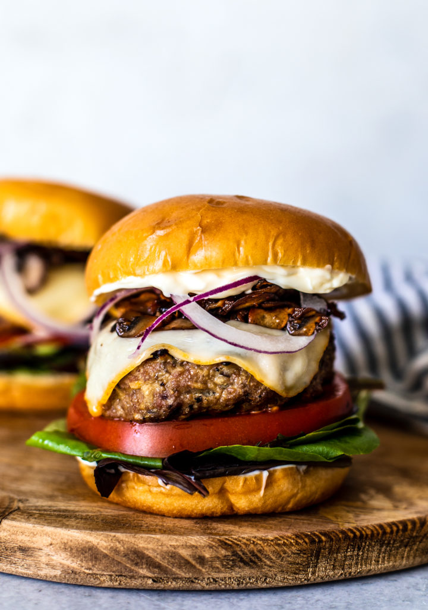

Grilled pizza

Turkey burgers
Whether you've been searching for the best turkey burger, need to use up the ground turkey lurking in your freezer, or are simply tired of beef burgers, boy,
do we have the recipe for you. Gone are the days of boring, dry, and lacking-in-flavor turkey burgers thanks to this 5-star creation.
Ingredients
- 3 pounds ground turkey
- ¼ cup seasoned bread crumbs
- ¼ cup finely diced onion
- 2 egg whites, lightly beaten
- ¼ cup chopped fresh parsley
- 1 clove garlic, peeled and minced
- 1 teaspoon salt
- ¼ teaspoon ground black pepper
Steps
- Mix ground turkey, seasoned bread crumbs, onion, egg whites, parsley, garlic, salt, and pepper together in a large bowl.
- Form into 12 patties.
- Cook the patties in a medium skillet over medium heat, turning once, to an internal temperature of 180 degrees F (85 degrees C).